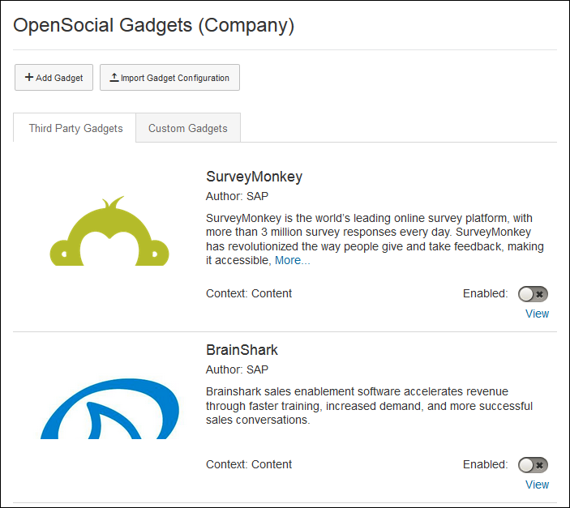
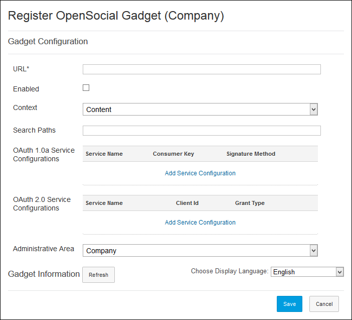
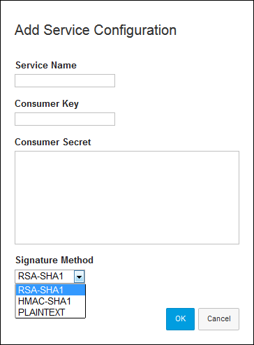
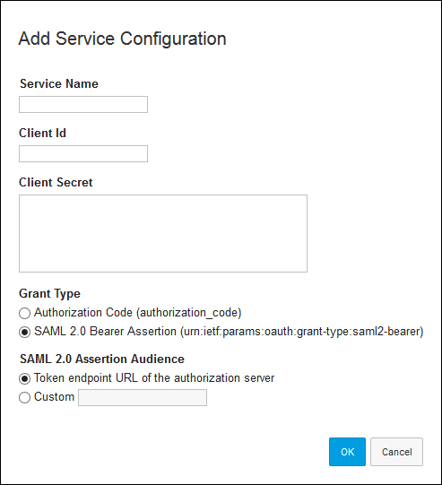
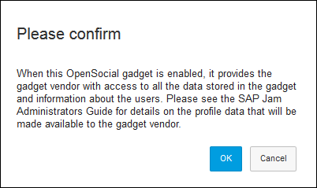
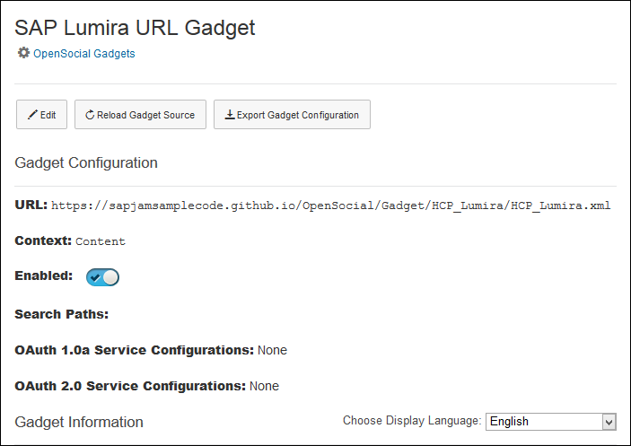
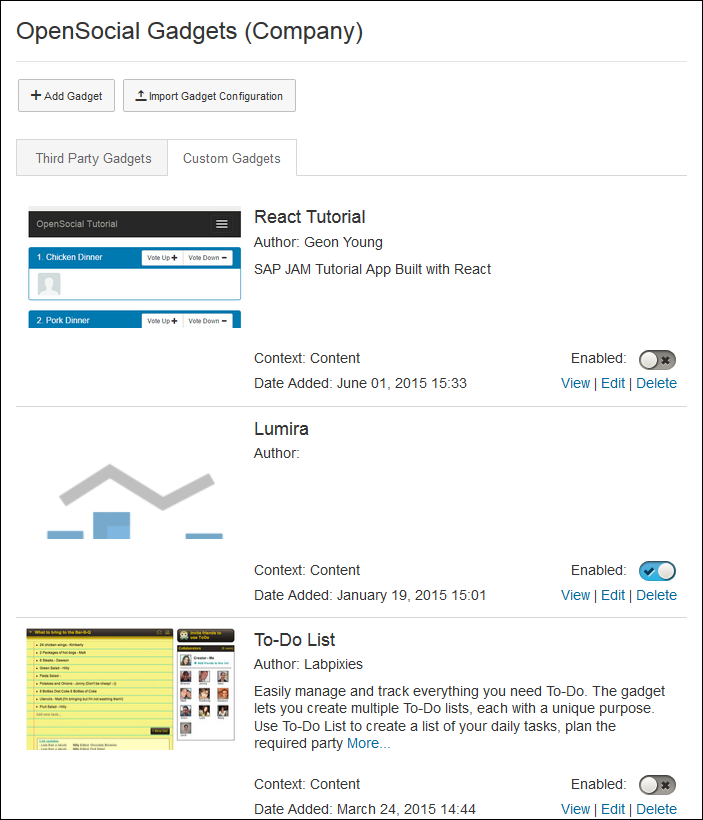
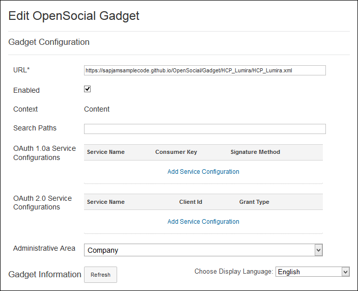
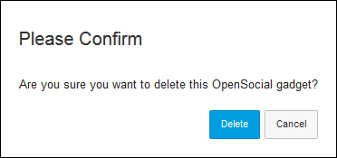

Register your gadget with SAP Jam Collaboration
OpenSocial gadgets provide a mechanism to extend SAP Jam Collaboration's abilities to interact with any software or service.
SAP Jam Collaboration provides
access to pre-built, third-party OpenSocial gadgets that are ready to use by simply
enabling them. You can also download some existing OpenSocial gadgets from the SAP
Jam Sample Code GitHub site's OpenSocial Gadgets section. There is also support for your
organization to develop your own OpenSocial gadgets, and to make those available to your
SAP Jam users.
For information on how to add, enable, and manage OpenSocial gadgets, please see the
following:
site's OpenSocial Gadgets section. There is also support for your
organization to develop your own OpenSocial gadgets, and to make those available to your
SAP Jam users.
For information on how to add, enable, and manage OpenSocial gadgets, please see the
following:
- To import an OpenSocial gadget configuration explains how to upload a gadget configuration file.
- To add an OpenSocial gadget explains how to register a gadget that does not have a configuration file.
- To enable an OpenSocial gadget explains the various ways in which you can enable a gadget and it provides an explanation of the warning that is displayed when you first enable a particular OpenSocial gadget.
- To manage OpenSocial gadgets explains how to view, edit, or delete an OpenSocial gadget.
To import an OpenSocial gadget configuration
You can upload a gadget configuration file for any OpenSocial gadget that you
download from the SAP Jam Sample Code GitHub site's OpenSocial Gadgets section. Gadget configuration files
are the files that you get when you click on Export Gadget Configuration in a
gadget's administration page. To import an OpenSocial gadget's configuration file,
do the following:
- From the
 Integrations
Integrations  OpenSocial Gadgets
OpenSocial Gadgets  page, click Import Gadget Configuration
near the top of the page.
page, click Import Gadget Configuration
near the top of the page.
Your browser will open a file upload dialog box.
- Navigate to the configuration file on your device and upload it.
After importing the file, the Register OpenSocial Gadget page displays with the file's configuration information shown in the form.
- Change the existing settings or fill in any missing settings as required and
click Save.
You are returned to the OpenSocial Gadgets page, with the gadget that you registered listed in the catalog.
To add an OpenSocial gadget
For OpenSocial gadgets that you have developed within your own organization, you must fill in the Register OpenSocial Gadget form, as described in the following:
- In SAP Jam Collaboration, as a company administrator, click on the cog icon at
the top of the page, select Admin from the context menu,
and select Integrations OpenSocial Gadgets from the left navigation sidebar.
The OpenSocial Gadgets page displays.
Figure 76: OpenSocial Gadgets catalog - Click Add Gadget at the upper right corner of the page.
The Register OpenSocial Gadget page displays.
Figure 77: The Register OpenSocial Gadget form - In the URL field, enter the URL of the OpenSocial gadget that you want to register.
- Optionally, select the Enabled checkbox to have the
gadget immediately available.
The gadget can be enabled at any time, but be certain that you are aware of implications of doing so before you enable it. This information is shown in the note in the procedure To enable an OpenSocial gadget.
- From the Context drop-down menu, select either: Admin OpenSocial Gadgets Register OpenSocial Gadget page. The URL must point to the XML file for your gadget.
When you register your SAP Jam OpenSocial Gadget-compliant application, you can configure it to have one of four types of Contexts:
- Content: Content gadgets can be added to a group's Content section by anyone in the company with the appropriate privileges. They appear as an addable option in the Content area of SAP Jam Collaboration groups.
- Profile: Profile gadgets appear on the profile of each member of
the company automatically. They appear in the Product Setup Custom Profile page, where you can configure where they will appear in
your users' profile pages.
- Group: Group gadgets can be added to a group by anyone in the
company with the appropriate privileges. They appear as a selectable
list item in the left panel area of a SAP Jam Collaboration group.
- Select Group Admin Edit Group Setup Select Primary Group Extension to add a group gadget to a group.
- Note: Only one group gadget can be added to a group and it cannot be removed from the group it has been added to.
- Select
- Statusbar: Statusbar gadgets can be added by anyone in the company with the appropriate privileges. They appear on the bottom of every screen as an interactive button that can show alerts, badges and expand into a collapsible window.
- Optionally, to configure access to the data stores for personalized data for the
gadget, you can enter a list of parameters in the Search
Paths field.
These parameters allow you to descend into the AppData pool and the public_wave pool JSON data structures. Search parameters can be space- or comma-delimited, and wildcards can be set on the JSON keys. For example:
- a — This example searches for all data within a keys.
- a.b — This example searches for all data within b keys that are within a keys.
- a.b* — This example uses * as a wildcard to search for all data within keys that start with b (using the * wildcard) that are within a keys.
- a.b* c.d — This example uses a space delimiter to provide two search paths. The first search path (a.b*) searches for all data within keys that start with b that are within a keys. The second search path searches for all data within c keys that are within d keys.
- a.b*,c.d — This example uses a comma delimiter rather the space delimiter used in the previous example; otherwise, it peforms the same searches as the previous example.
- Optionally, to enable access to the gadget and its displayed data using OAuth
1.0a, click Add Service Configuration in the
OAuth 1.0a Service Configurations section.
An Add Service Configuration dialog box displays.
Table 1: In the OAuth 1.0a Add Service Configuration dialog box, set the following: - In the Service Name text box, enter the service name for your OAuth 1.0a service.
- In the Consumer Key text box, enter the consumer key for your OAuth 1.0a service.
- In the Consumer Secret text box, enter the consumer secret for your OAuth 1.0a service.
- From the Signature Method drop-down menu, select the consumer secret for your OAuth 1.0a service.
- Click OK to save these
options, or click Cancel to
abandon them.
You are returned to the OpenSocial Gadgets page.
 - Optionally, to enable access to the gadget and its displayed data using OAuth
2.0, click Add Service Configuration in the
OAuth 2.0 Service Configurations section.
An Add Service Configuration dialog box displays.
Table 2: In the OAuth 2.0 Add Service Configuration dialog box, set the following: - In the Service Name text box, enter the service name for your OAuth 2.0 service.
- In the Client Id text box, enter the client ID for your OAuth 2.0 service.
- In the Client Secret text box, enter the consumer secret for your OAuth 2.0 service.
- Select the authorization Grant Type that you want to use.
- If you chose the SAML 2.0 Bearer Assertion, then you must also select the SAML 2.0 Assertion Audience.
- Click OK to save these
options, or click Cancel to
abandon them.
You are returned to the OpenSocial Gadgets page.
 - From the Administrative Area drop-down menu, select the administrative area in which you want this gadget to be available. If you choose a specific area, the gadget will only be available for use in the groups in that area. If you choose "Company", the gadget will be available for use in all of the groups in your organization.
- From the Choose Display Language drop-down menu, select the language that you want used in the OpenSocial gadget.
- At any time after you have entered the URL for the gadget, you can click Refresh beside Gadget Information to view important information about the gadget and to see a preview of the gadget.
- When all of the above settings are complete and to your satisfaction, click
Save to register the OpenSocial gadget for use in SAP
Jam Collaboration.
You are returned to the OpenSocial Gadgets page, with the gadget that you registered listed in the Custom Gadgets tab's catalog.
To enable an OpenSocial gadget
You can enable an OpenSocial gadget for use by the members of your organization's SAP Jam instance in several ways:
|
 |
The first time that you enable a particular OpenSocial gadget in your SAP Jam instance, the confirmation dialog box shown above will display. See the note below for an explanation of the warning about the profile data that will be made available to the gadget vendor.
To manage OpenSocial gadgets
To view the configuration of a gadget
You can view the configuration of either a "Third Party Gadget" or a "Custom Gadget" by doing the following:
- In either tab of the OpenSocial Gadgets page, click
View on the row for the OpenSocial gadget whose
configuration information you want to see.
An OpenSocial Gadget: <gadget_name> page displays.
Figure 78: An OpenSocial Gadget view pageNote that the gadget information and preview sections are not shown.
- Optionally, to edit the gadget's configuration, click Edit near the top of the page.
- Optionally, to exit the View page, click
OpenSocial Gadgets near the top of the page.
You are returned to the OpenSocial Gadgets page.
- Note that you can Enable the gadget from this page. If you chose to do so, be certain that you are aware of implications of doing so before you do.
To modify the configuration of a gadget
Note that you cannot modify Third Party Gadgets.
You can edit a "Custom Gadget" by doing the following:
- In the Integrations OpenSocial Gadgets page, click on the Custom Gadgets tab.
The OpenSocial Gadgets Custom Gadgets tab displays.
Figure 79: The OpenSocial Gadgets Custom Gadgets tabNote that the gadget information and preview sections are not shown.
- Find the custom gadget that you want to modify and click
Edit on the row for that gadget to modify its
configuration.
The Edit OpenSocial Gadget page displays.
Figure 80: Edit an OpenSocial Gadget configurationThe Edit page is effectively identical to the Register OpenSocial Gadget page (so you can perform most of the steps in To add an OpenSocial gadget), although you cannot modify the Context once it is set.
- Make whatever changes are required.
- Click Save to save your changes.
You are returned to the OpenSocial Gadgets page, with the modified OpenSocial Gadget that you just edited listed in the catalog.
To delete a Custom Gadget
Note that you cannot delete Third Party Gadgets.
You can delete a "Custom Gadget" by doing the following:
- In the Integrations OpenSocial Gadgets page, click on the Custom Gadgets tab.
The OpenSocial Gadgets Custom Gadgets tab displays.
- Find the custom gadget that you want to modify and click
Delete on the row for that gadget to modify its
configuration.
A delete confirmation dialog box displays.
Figure 81: Confirmation to delete an OpenSocial Gadget - Click Delete.
You are returned to the Custom Gadgets tab, where the selected gadget has been removed from the catalog.